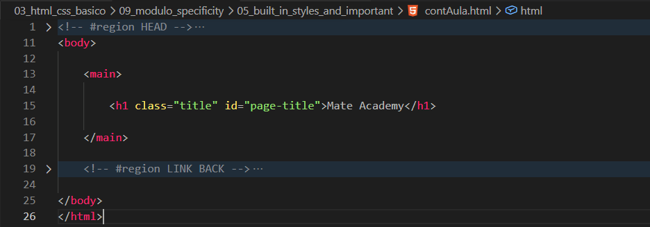
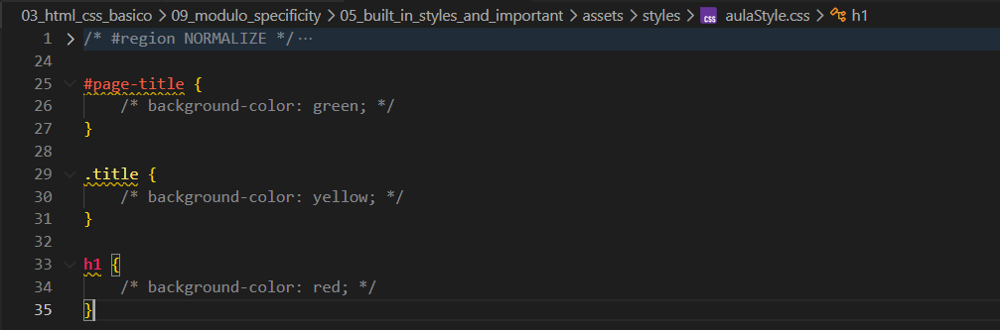

Built in Styles and Important
Intro
Aqui teremos alguns exemplos onde a prioridade funciona de uma forma diferente.
Aqui teremos alguns exemplos onde a prioridade funciona de uma forma diferente.
HTML:

CSS:

Como padrão no HTML, o background-color é transparent (ou valor padrão). Ao adicionarmos regras em CSS, elas serão aplicadas conforme a prioridade (especificidade). No exemplo, quem possui maior peso é o #id.
Mesmo que o #id tenha um peso alto, existe uma exceção: o CSS inline, que possui prioridade maior.
Além do CSS inline, também temos outra exceção ao utilizar !important, que força a prioridade daquela regra.
Obs: usar !important não é recomendado na maioria dos casos.
Conteudo da aula